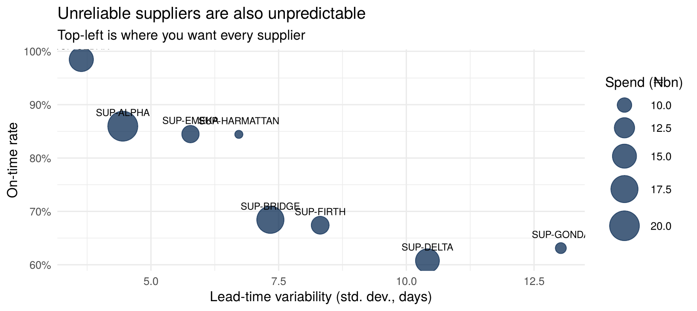

Unique PO; received ≥ ordered (or quarantined); order value = qty × unit cost; every supplier in the master; spend reconciles to accounts payable
Govern
Metrics: on time in full (OTIF) %, mean and standard deviation of lead time, spend, supplier concentration (top-3 share)
Serve
Procurement dashboard; supplier scorecards (Portable Document Format (PDF)) for quarterly reviews; safety-stock parameters back to the ERP
Plane
Supplier prices are confidential; contract data is restricted to procurement
19.3 Run the pipeline
spec <-list(name ="supply_chain",bronze =list(pos ="supply_chain_pos.csv",map_supplier =data.frame(source_code ="SUP-CEDAR-NG", conformed_code ="SUP-CEDAR",reason ="Nigerian subsidiary; same contract")),silver =list(purchase_orders =" SELECT p.po_id, CAST(p.po_date AS DATE) po_date, CAST(p.received_date AS DATE) received_date, COALESCE(m.conformed_code, p.supplier_id) AS supplier_id, p.supplier_id AS supplier_id_source, p.material_group, p.incoterm, p.port_of_entry, CAST(p.order_qty AS INTEGER) order_qty, CAST(p.unit_cost_ngn AS DOUBLE) unit_cost_ngn, CAST(p.order_value_ngn AS DOUBLE) order_value_ngn, CAST(p.promised_lead_days AS INTEGER) promised_days FROM bronze.pos p LEFT JOIN bronze.map_supplier m ON p.supplier_id = m.source_code WHERE CAST(p.received_date AS DATE) >= CAST(p.po_date AS DATE)",po_rejects ="SELECT *, 'received before ordered' AS reason FROM bronze.pos WHERE CAST(received_date AS DATE) < CAST(po_date AS DATE)"),gold =list(fct_po_lifecycle =" SELECT *, date_diff('day', po_date, received_date) AS actual_days, (date_diff('day', po_date, received_date) <= promised_days)::INT AS on_time FROM silver.purchase_orders",mart_supplier_scorecard =" SELECT supplier_id, COUNT(*) pos, SUM(order_value_ngn) spend_ngn, AVG(on_time) on_time_rate, AVG(actual_days) mean_lead, stddev(actual_days) sd_lead, AVG(actual_days - promised_days) avg_slip_days FROM gold.fct_po_lifecycle GROUP BY 1"),tests =list(t_unique("gold.fct_po_lifecycle", "po_id"),t_range("gold.fct_po_lifecycle", "actual_days", 0, 365),t_custom("order value = qty × unit cost (±₦1)", "SELECT COUNT(*) FROM gold.fct_po_lifecycle WHERE abs(order_qty * unit_cost_ngn - order_value_ngn) > 1"),t_custom("quarantined POs ≤ 2%", "SELECT CASE WHEN (SELECT COUNT(*) FROM silver.po_rejects) > 0.02 * (SELECT COUNT(*) FROM bronze.pos) THEN 1 ELSE 0 END"),t_custom("no unconformed supplier codes", "SELECT COUNT(*) FROM gold.fct_po_lifecycle WHERE supplier_id = 'SUP-CEDAR-NG'")),publish =c("gold.mart_supplier_scorecard"))sc <-run_pipeline(spec)show_tests(sc$tests)
status
severity
test
failing_rows
PASS
error
unique(gold.fct_po_lifecycle: po_id)
0
PASS
error
range(gold.fct_po_lifecycle.actual_days in [0, 365])
s <-dbGetQuery(sc$con, "SELECT * FROM gold.mart_supplier_scorecard ORDER BY on_time_rate")ggplot(s, aes(sd_lead, on_time_rate, size = spend_ngn /1e9, label = supplier_id)) +geom_point(colour ="#0B2C55", alpha = .75) +geom_text(size =3, vjust =-1.4) +scale_y_continuous(labels = scales::percent) +scale_size(range =c(3, 12)) +labs(x ="Lead-time variability (std. dev., days)", y ="On-time rate", size ="Spend (₦bn)",title ="Unreliable suppliers are also unpredictable", subtitle ="Top-left is where you want every supplier")

19.5 Insight 2: safety stock from real variability
Safety stock protects against variability, not averages. A standard formula, for demand d per day with standard deviation σ_d, and lead time L with standard deviation σ_L:
\[SS = z \sqrt{\bar{L}\,\sigma_d^2 + \bar{d}^2 \sigma_L^2}\]
z <-qnorm(0.95) # 95% cycle service leveld_bar <-400; sd_d <-120# illustrative daily demand for one materials |>transform(safety_stock_units =round(z *sqrt(mean_lead * sd_d^2+ d_bar^2* sd_lead^2))) |>subset(select =c(supplier_id, mean_lead, sd_lead, safety_stock_units)) |>head(9)
supplier_id
mean_lead
sd_lead
safety_stock_units
SUP-DELTA
26.946872
10.413439
6928
SUP-GONDA
32.705957
13.024761
8644
SUP-FIRTH
20.889878
8.313465
5544
SUP-BRIDGE
17.757113
7.338303
4899
SUP-HARMATTAN
16.127630
6.720690
4492
SUP-EMEKA
13.809267
5.773805
3869
SUP-ALPHA
10.803656
4.448832
2998
SUP-CEDAR
9.126511
3.636635
2466
Switching the same material from the least to the most predictable supplier changes the safety stock needed by thousands of units, which is working capital released. That is the business case for the scorecard.
19.6 Insight 3: ports and incoterms
dbGetQuery(sc$con, "SELECT port_of_entry, incoterm, COUNT(*) pos, round(AVG(actual_days),1) mean_days, round(quantile_cont(actual_days, 0.9),1) p90_days FROM gold.fct_po_lifecycle GROUP BY ALL HAVING COUNT(*) > 200 ORDER BY p90_days DESC")
Report the 90th percentile alongside the mean. Planners are hurt by the slow tail, not the average.
19.7 Deploying in a supply-chain function
Owner: Head of Procurement (supplier master and scorecard definitions); Supply Planning (safety-stock parameters).
First 90 days: a conformed supplier master and a monthly scorecard; then safety-stock recommendations that the ERPimports (a write-back loop: recommendations go in as a source file, approved by planners).
Pitfall: promised lead days typed in by buyers can be gamed. Track who changes them, and compare them with contract terms.
19.8 🏋️ Exercises
E19.1 🟢 What share of total spend goes to the top three suppliers? Is that a concentration risk? E19.2 🟡 Join late POs to retail stockouts: for weeks with more late Raw MaterialPOs, is the stockout rate higher? What would you need to make this causal? E19.3 🔴 Build a quarterly supplier review as a parameterised Quarto PDF (params: supplier) and render it for every supplier in one loop.